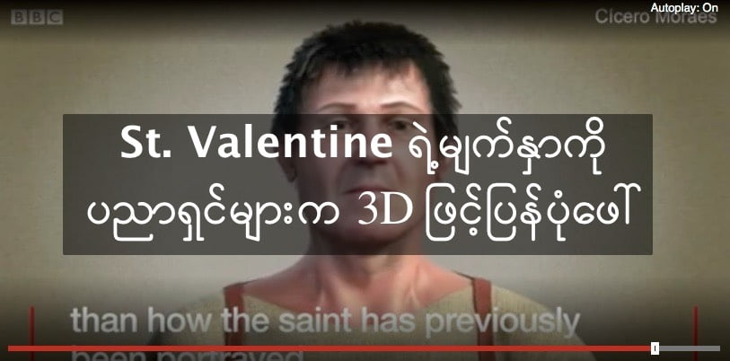

Valentine Day ရယ်လို့ ဖြစ်လာစေတဲ့ Saint Valentine (သူတော်စင်ဗယ်လင်တိုင်း) ရဲ့ မျက်နှာကို ပညာရှင်တွေက 3D နဲ့ပြန်ပုံဖေါ်ကြည့်ခဲ့ပါတယ်။ သူ့ရဲ့ ဦးခေါင်းခွံရိုးကနေ ပြန်ပြီး 3D ကွန်ပြူတာ ပရိုဂရမ်နဲ့ ပုံဖေါ်ခဲ့တာ ဖြစ်ပါတယ်။ သူဟာ ၂၆၉ AD (လွန်ခဲ့တဲ့ ၁၇၄၉ နှစ်အလွန်) က အသတ်ခံခဲ့ရတယ်လို့ ယုံကြည်ကြပါတယ်။ ဒီ 3D ရုပ်ကြွကို ဘရာဇီးက 3D ပညာရှင် စစ်စီရိုမိုရေးစ်က ဖန်တီးခဲ့တာ ဖြစ်ပါတယ်။ သူ့ရဲ့ ရုပ်ကြွင်းလို့ ယူဆရတဲ့ အရိုးတွေကို အီတလီနိုင်ငံ မွန်ဆဲလစ်မြို့က စိန့်ဂျော့ချ် ဘုရာကျောင်းမှာ သိမ်းစည်းထားပါတယ်။ ဒီ 3D ဖန်တီးပြုလုပ်မှုကို ရိုမန်ကက်သလစ် ကျောင်းတော်က ခွင့်ပြုခဲ့တာဖြစ်ပြီး ဖန်းတီးမှုကိုလဲ ကျောင်းတော်က တာဝန်ရှိသူတွေက ကြီကြပ်ခဲ့ပါတယ်။ အခုရရှိတဲ့ ရုပ်ပုံအရ စိန့်ဗယ်လင်တိုင်းဟာ အရင်ရုပ်ပုံနဲ့ ပန်းချီတွေမှာ ဖေါ်ပြခဲ့တာထက် အများကြီး အသက်ငယ်နေတာ အောက်က ဗီဒီယိုမှာ တွေ့ရှိရပါတယ်။
စိန့်ဗယ်လင်တိုင်းရဲ့ မျက်နှာကို ပညာရှင်များက 3D ဖြင့်ပြန်ပုံဖေါ်

February 15, 2018
Other Posts
- DIY ရေသန့် ရေစစ် ကိုယ်တိုင် အလွယ် လုပ်နည်း
- ကိုယ်ပျောက်လေယာဉ်တွေအတွက် ကြီးမားတဲ့ ခြိမ်းခြောက်မှု ဖြစ်လာနိုင်တဲ့ S-500 လေကြောင်းရန် ကာကွယ်ရေးစနစ်သစ်
- စကြာဝဠာကြီးက ဘာအရောင် ရှိလဲ
- မံမီ ကျိန်စာကို သိပ္ပံပညာရှင်တွေက ဘယ်လိုအကြောင်းပြသလဲ
- မစ်ကီးဝေး ဗဟိုနားမှာ အရက်ပြန် ရှာတွေ့
- သက်ရှိတွေ ရှိနေနိုင်တဲ့ Hycean ဂြိုလ်
- Essential Life Skills for Pre-School Children
- အဒြကြယ်ကြီး ပေါက်ကွဲလုပြီလား
- ဂြိုဟ်နှစ်စင်း တိုက်မိတဲ့ဖြစ်စဉ်
- စကြာဝဠာရဲ့ ပဟေဠိ အမှောင်ဒြပ် Dark Matter